Pless 汉能发电象棋
Basic Info
Type: Product service system
Tool: AI / PS / PSSD tools
Team member: 3
Work in charge: Concept / PSSD system / Visual identity
Requirement & Purpose
PLESS made the use of photovoltaic film technology developed by HANERGY company. It works with charity organizations to disseminate chess games made of photovoltaic film to enpower the strollers so that they can use the solar energy gathered duting daytime. And the common citizens can play the chess and talk with the strollers, charging their cellphones and develop empathy to the strollers. Then the strollers can get tips for the charging as well.
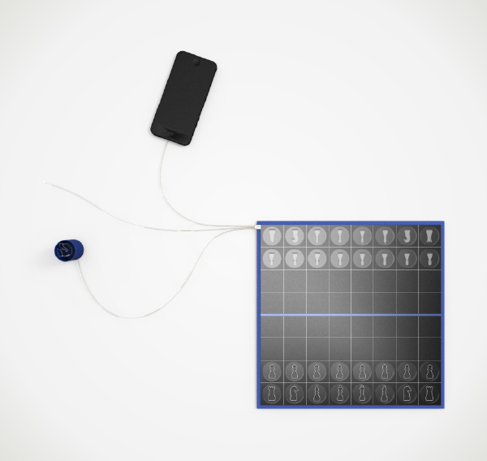 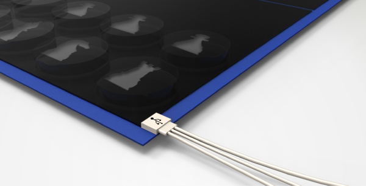 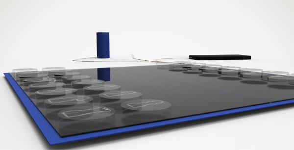 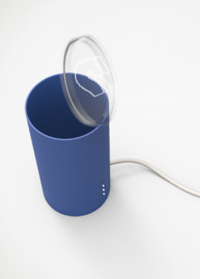
Rendering of the Pless product
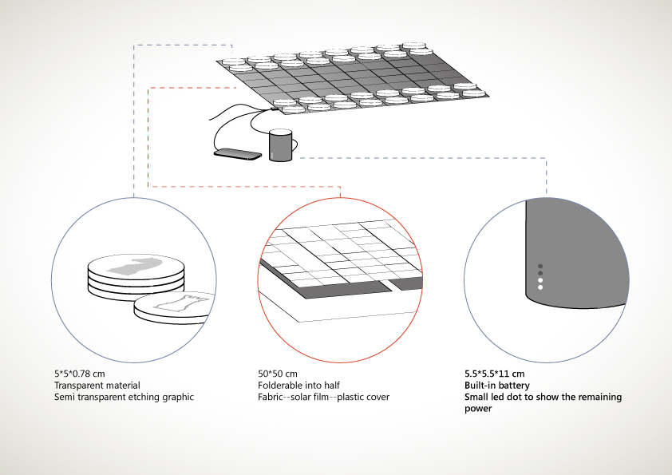
Pless as a chess game that absorb solar energy
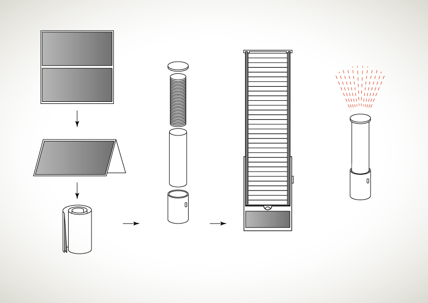
Pless as a torch using solar energy
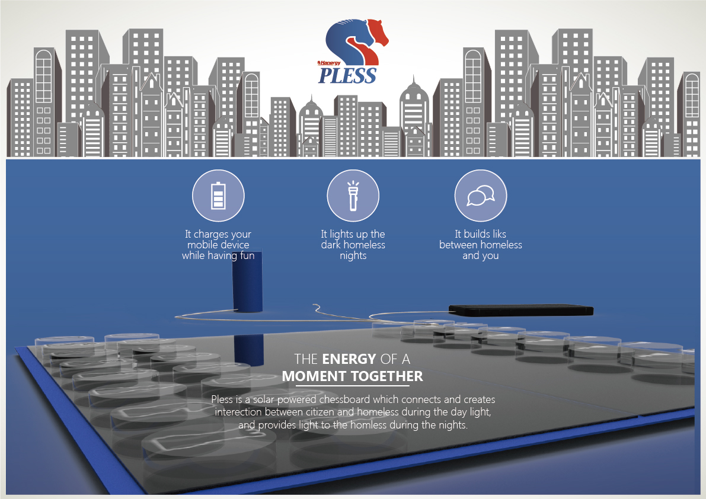 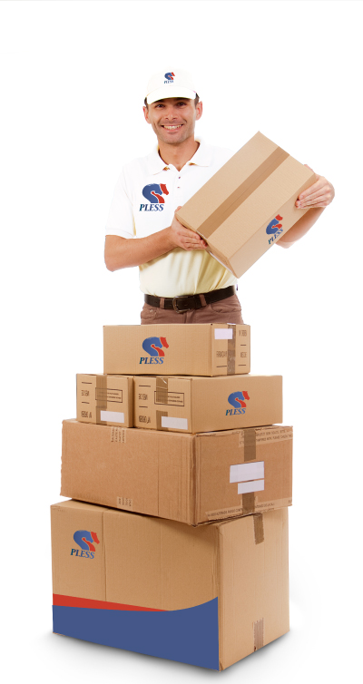 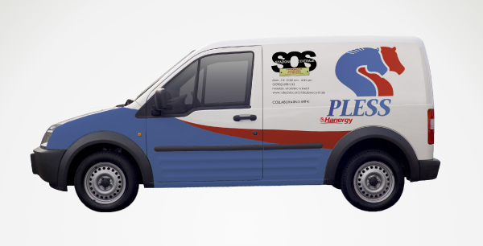
Pless touchpoints
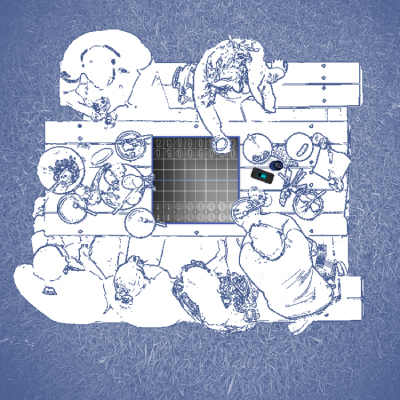
Common citizens can play PLESS chess game during outdoor actvities
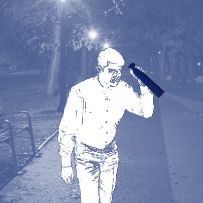
Common citizens can use PLESS as a torch at night
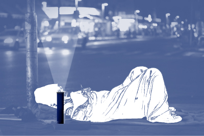
The strollers can use the solor energy during night
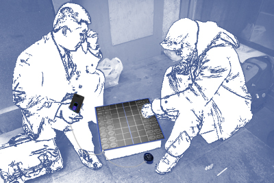
Common citizens can play chess with the strollers and charge their phones